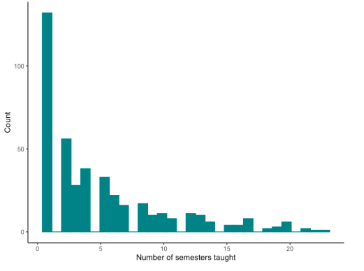
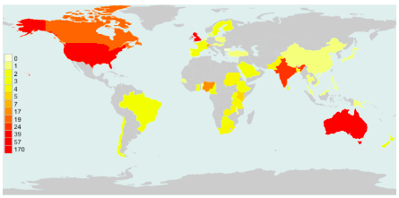

Peoples-uni tutors – from 2008 to 2020
Development of the educational programme started in 2007, and the first courses were run as modules in 2008. Over the years, 429 people were active tutors, acting as facilitators of online discussion forums, marking assignments, or supervising student Dissertations. 81 tutors had also acted as module developers. 65 of these tutors also took on the responsibility of being a module leader during at least one semester. - this involved ensuring that a team of tutors was in place for the semester to come, and that the resources and assignments were revised and updated. 54 people provided non-academic educational support to students – some of these ‘student support officers’ subsequently became tutors.
Figure 1 shows the distribution of the numbers of tutors who taught over various numbers of semesters. There were 24 possible semesters, and 31 tutors were active in 15 or more semesters. Many of those active in only one semester functioned as Dissertation supervisors.

Tutors came from 55 different countries. The UK contributed the largest number, with Australia next, a reflection of the location of key personnel and their networks. Over time, a number of graduates joined as tutors, broadening the geographic, professional and cultural diversity of the tutor group. Figure 2 shows the geographical distribution of the tutors, with the scale showing the number of tutors in each country.

The names of the volunteer tutors can be seen here and feedback from some of the tutors here